РАЗРАБОТКА ИНФОРМАЦИОННОЙ
СИСТЕМЫ, РЕГИСТРИРУЮЩЕЙ ИЗМЕНЕНИЕ ЦЕН КУПЛИ
И ПРОДАЖИ ВАЛЮТ
Сложность: *
Теги: справочник, регистр сведений, схема компоновки данных
ЗАДАНИЕ
Заказчик просит разработать информационную систему, регистрирующую изменение цен купли и продажи валют. Нужно составить отчет, в котором будет формироваться график изменения цен купли-продажи различных валют.
q Создать новую информационную базу.
q Открыть информационную базу в режиме «Конфигуратор».
q Открыть окно конфигурации.
Подробнее о том, как это сделать, смотрите в Лабораторной работе № 2 (стр. 17).
Согласно условию, нам необходимо где-то хранить информацию о валютах. Для этого будем использовать объект конфигурации справочник.
Определение
Справочник – это объект конфигурации, который хранит справочную информацию, например, перечень товаров или список сотрудников (более подробно про справочники можно прочитать здесь: https://v8.1c.ru/platforma/spravochniki/). Данный справочник будет содержать объекты аналитического учета, то есть список валют.
Создадим справочник «Валюты».
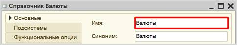
В окне редактирования справочника на вкладке «Прочие» можно создать предопределенные элементы.
Определение
Предопределенные
элементы – это такие элементы, которые создает
разработчик в конфигураторе для удобства работы
пользователя. Созданный таким образом элемент будет доступен пользователю с
первого запуска программы. Например, можно создать предопределенный элемент
«Россия» в справочнике «Страны мира».
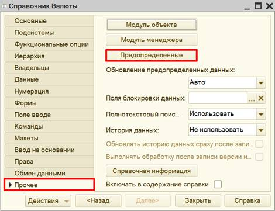
Создадим два новых предопределенных элемента: «Доллар» и «Франк».
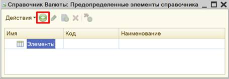
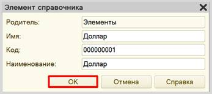
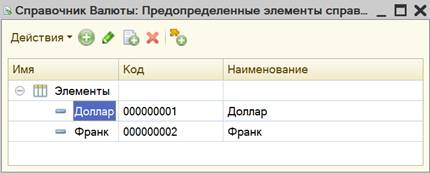
Любая валюта на рынке может быть куплена или продана. То есть вид сделки подразумевает выбор из этих двух вариантов.
Для решения задачи хранения информации, которая представляет собой фиксированный набор альтернатив, нам понадобится новый объект, который называется перечисление (подробнее про перечисления можно прочитать здесь: https://v8.1c.ru/platforma/perechisleniya/).
Добавим новое перечисление «ВидСделки».
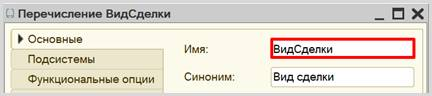
Значения перечисления (заготовленный список выбора) заполним на вкладке «Данные».
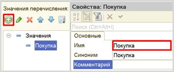
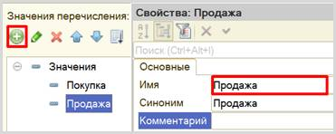
Для хранения информации о курсах валют мы будем использовать механизм регистра сведений.
Регистр сведений позволяет сохранять информацию об изменении каких-либо показателей с течением времени (подробнее о регистрах сведений можно прочитать здесь: https://v8.1c.ru/platforma/registr-svedeniy/).
В нашем случае, курсы валют меняются каждый день, следовательно, регистр сведений предназначен для хранения значений курсов валют по дням.
Добавим новый регистр сведений «КурсыВалют». Периодичность регистра установим в значение «В пределах дня». Это значит, что добавлять данные в регистр можно будет только один раз в день. Регистр будет независимым – это означает, что в него записи могут быть добавлены напрямую, без специального документа-регистратора.
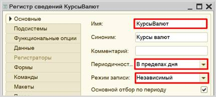
Переходим к описанию структуры регистра накопления. Для этого откроем вкладку «Данные».
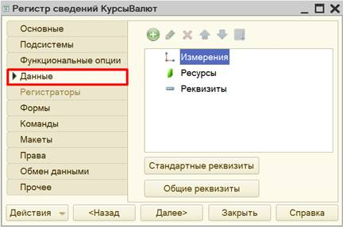
Заполнение данного окна всегда проще всего начинать с добавления ресурса. Чтобы понять, что использовать в качестве ресурса, следует задать вопрос: «Что нам нужно хранить в данном регистре?». Нам нужно хранить данные о курсах. Следовательно, курс и будет являться ресурсом. Тип данного реквизита – «Число».
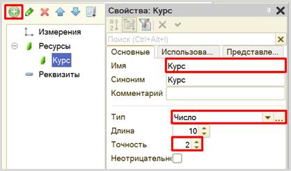
Чтобы разобраться с измерением, нужно понять, в разрезе чего мы хотим учитывать курс? Мы хотим хранить курсы (чего?) валют. Значит, в качестве измерения необходимо добавить реквизит «Валюта». Тип данного реквизита – «СправочникСсылка.Валюты». В этом поле будут храниться ссылки на элементы справочника «Валюты».
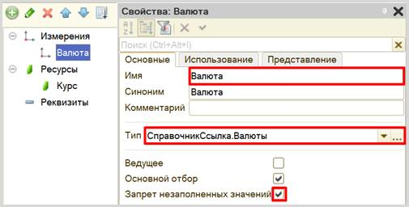
Если бы нам нужно было просто хранить курсы валют, то мы оставили бы структуру именно такой. Но наша цель – хранить курс продажи или покупки валюты. Поэтому нужно добавить еще одно измерение – «ВидСделки».
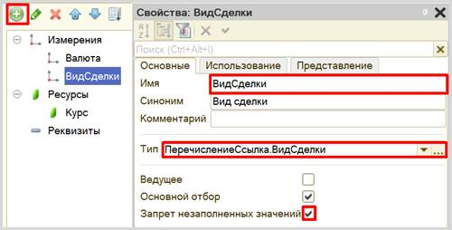
Механизм хранения данных реализован. Откроем программу в режиме «1С:Предприятия» и введем несколько курсов валют.
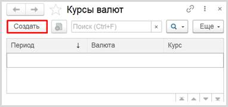
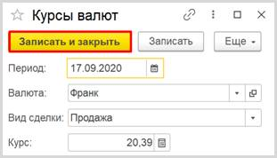
Введем данные за несколько дней о стоимости покупки и продажи валюты.
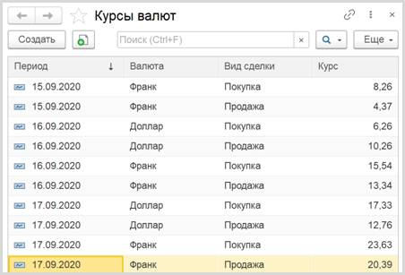
Чтобы отобразить изменение курсов с течением времени необходимо использовать объект конфигурации отчет.
Определение
Отчет – это такой объект конфигурации, который
формирует данные в понятном для пользователя виде, например, в виде таблицы или
диаграммы (подробнее про отчеты можно прочитать здесь: https://v8.1c.ru/platforma/otchet/).
Создадим новый отчет «КурсыВалют». Для наполнения отчета воспользуемся конструктором схемы компоновки данных.
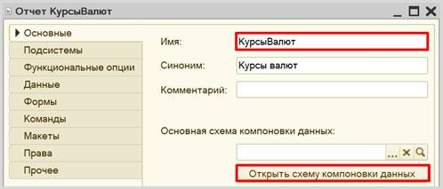
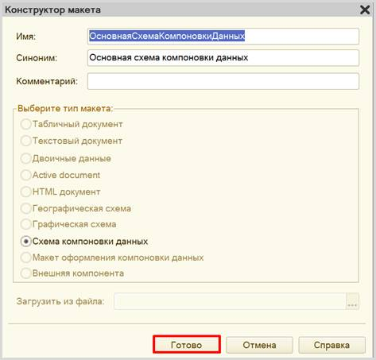
В открывшемся окне будем создавать запрос к базе данных. Для этого воспользуемся конструктором запроса.
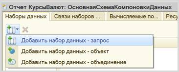
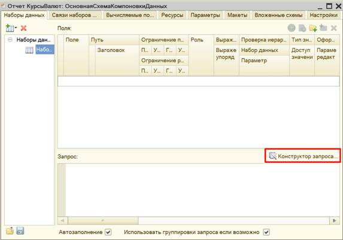
Открывшееся окошко имеет три части:
q Часть слева отображает все объекты конфигурации, имеющиеся в нашей базе данных;
q Посередине находятся таблицы – это выбранные нами объекты, откуда мы хотим получать данные для конкретного отчета;
q Справа поля – это те значения (поля), которые мы хотим увидеть в отчете.
В качестве источника будем использовать таблицу регистра сведений «КурсыВалют», которую только что самостоятельно заполнили в режиме пользователя.
Чтобы перенести данные из одного окна в другое, просто перетащите
нужные поля с помощью мыши либо воспользуйтесь стрелочками, расположенными
между окнами.
В результате данное окно должно быть
заполнено следующим образом:
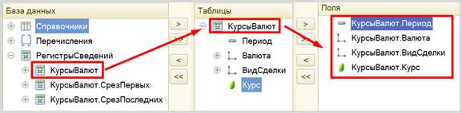
По завершении работы с конструктором нажимаем «ОК».
С помощью конструктора должен сформироваться следующий запрос к базе данных:
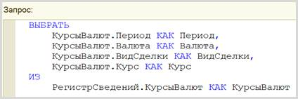
На вкладке «Ресурсы» определим реквизит «Курс» в качестве ресурса. Изменим выражение по умолчанию на «Курс».
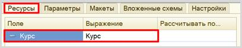
Теперь переходим к настройке внешнего вида отчета. Воспользуемся конструктором настроек отчета.
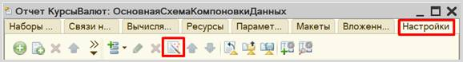
С помощью конструктора настроек отчета выберем вариант отчета в виде диаграммы.
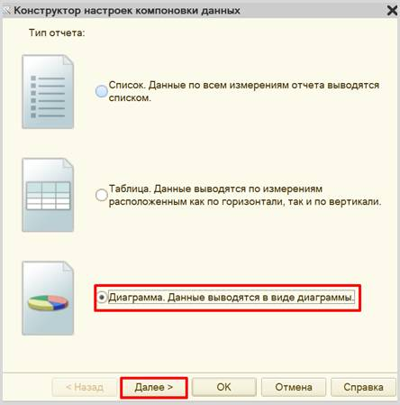
Укажем поля, которые будут отображаться в отчете.
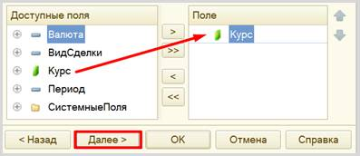
Переходим к следующему этапу настройки диаграммы. Точки и серии – это оси X и Y графика соответственно. Пусть ось Y отображает стоимость валюты на конкретную дату. Даты же пусть будут расположены по оси X.
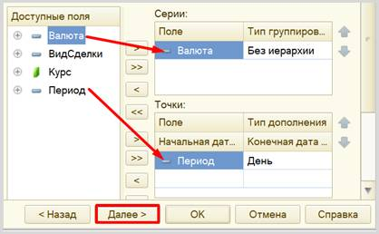
Далее следует выбрать поля для упорядочивания. Упорядочим график по возрастанию периода.
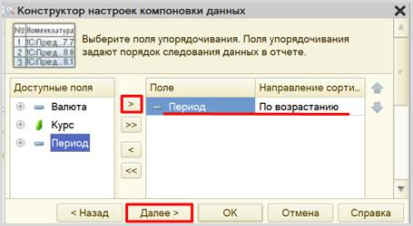
На последнем шаге выбираем тип диаграммы – график.
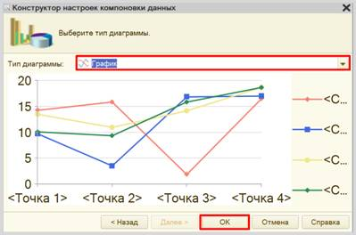
Теперь осталось лишь добавить вид сделки в пользовательские настройки, чтобы пользователь мог выбирать, какой график он хочет видеть. Это необходимо сделать на той же вкладке «Настройки», в нижней части окна.
Откроем вкладку «Отбор» и добавим отбор по виду сделки.
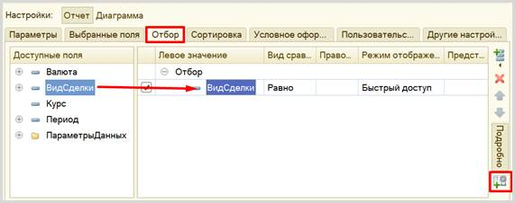
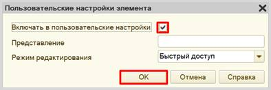
Посмотрим на то, как выглядят графики в режиме «1С:Предприятие».
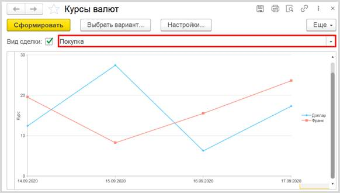
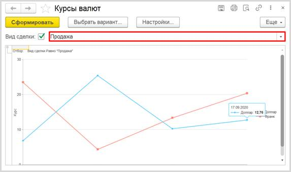
Поставленная задача решена.